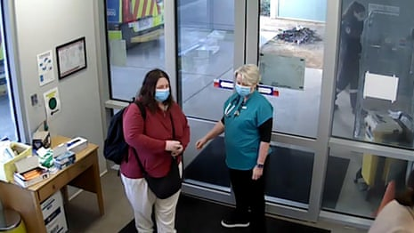
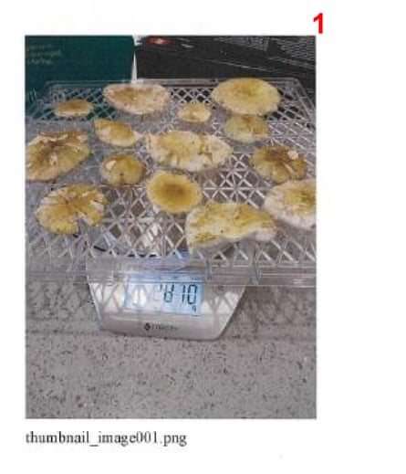

For more than two months, Erin Patterson’s triple-murder trial gripped people around the world. But while millions were glued to news updates, only a handful of people had access to the full case.
Jurors heard from more than 50 witnesses and were introduced to more than 120 pieces of evidence by the prosecution and defence throughout the lengthy proceedings.
On Monday, the Victorian supreme court jury convicted Patterson of murdering her estranged husband’s parents, Don and Gail Patterson, and his aunt, Heather Wilkinson. The 12-person jury also found Patterson guilty of attempting to murder Heather’s husband, Ian Wilkinson , who survived the lunch after spending weeks in hospital.
Now, the exhibits have been made public, showing a mountain of private text messages, phone records, screenshots, CCTV video and medical documents that helped to convict Patterson.
Here are some of the major pieces of evidence that paint a picture of how the tragedy unfolded.
The leftovers
A supplied image showing the beef wellington leftovers sent to an expert for examination.Photograph: AAP Image/Supplied, Supreme court of Victoria
The remains of the fatal beef wellington dish were shown to jurors in ‘Exhibit 26’ and ‘Exhibit 15’. They included samples sent to experts for examination, and the leftovers recovered from Patterson’s bin after her guests fell ill.
One image was taken from a screenshot taken by Dr Laura Muldoon, who assessed Patterson in the Monash hospital emergency department. The picture of the leftovers was sent to Muldoon by Dr Veronica Foote, the first on-call doctor at Leongatha hospital.
Exhibit 15 was a screenshot taken by Dr Laura Muldoon of the lunch leftovers that was was sent to Muldoon by Dr Veronica Foote at Leongatha hospital.Composite: Supreme court of Victoria
The dining table
This undated handout photo shows the dining and kitchen area inside the house of Erin Patterson in Leongatha.Photograph: Supreme court of Victoria/AFP/Getty Images
An undated photo released by the Victorian supreme court shows the dining table where Patterson’s lunch guests would have sat to eat the beef wellington meal on 29 July 2023.
There was some disagreement over how the meal was served, with surviving lunch guest, Ian Wilkinson, testifying that Patterson had eaten on a different coloured plate – a claim she denied. Wilkinson also told the jury about the atmosphere of the lunch, including Patterson’s reluctance to let guests help in the kitchen and her revelation about having cancer, which later proved to be false.
The dehydrator
The Sunbeam dehydrator found at the tip, which had been dumped there by Erin Patterson on 2 August 2 2023.Photograph: AAP Image/Supplied, Supreme court of Victoria
Patterson’s food dehydrator became a key piece of evidence for the prosecution to point to fabrications she had made to the police immediately after the fatal lunch.
Initially, she denied owning a dehydrator, which she was later found to have dumped at the local tip on 2 August. The dehydrator was found to contain traces of poisonous mushrooms.
Exhibit 21 shows images of Patterson in her vehicle at Koonwarra transfer station.
Exhibit 21 showed Erin Patterson in her vehicle at Koonwarra transfer station.Composite: Jane Warren/Supreme court of Victoria
The CCTV
Erin Patterson at Monash Hospital on 31 July 2023 in CCTV vision played to the court – video
CCTV footage was shown to the jury of Patterson at Monash hospital on the morning of 31 July, presenting to medical staff. She appeared calm, in white pants, a red jumper and a mask. Hours later, she would discharge herself.
The jury also saw footage of Dr Foote photographing leftovers of the meal, including mushrooms and their encased pastry, in recycled Woolworth bags while wearing hospital gloves.
Dr Foote photographs leftover beef wellingtons in trial video played at Patterson's trial – video
The discharge form
Exhibit 12 was the discharge-at-own-risk form for Erin Patterson.Photograph: Supreme court Victoria
Another difficulty for the defence was why Patterson discharged herself from the hospital against medical advice , five minutes after being told she may have been exposed to potentially fatal mushroom poisoning.
Dr Christopher Webster, who was working at the Leongatha hospital two days after Patterson served beef wellington to her in-laws for lunch, told the court that Don and Gail Patterson had already been transferred to intensive care, and the Wilkinsons were about to be transferred to a larger hospital, when Patterson arrived at the hospital about 8.05am on 31 July 2023.
A supplied image shows Erin Patterson inside Leongatha hospital on 31 July 31 2023, where she was taken after presenting with what she claimed was diarrhea from eating beef wellington.Photograph: AAP Image/Supplied, Supreme court of Victoria
Soon after, she discharged herself against medical advice once Webster told her that she would need to start undergoing treatment, saying she had not been prepared to be admitted.
The foraged mushrooms
An image showing mushroom foraging photos on Patterson’s devices her defence submitted to try to prove she had an innocent interest in searching for wild fungi as far back as 2020.Photograph: AAP Image/Supplied, Supreme court of Victoria
Patterson’s denial to police that she had ever foraged mushrooms was another lie the prosecution pointed to in order to emphasise her unreliability with the truth.
The defence submitted images of mushroom foraging photos taken on Patterson’s devices to try to established she had an innocent interest in searching for wild fungi stemming back to 2020.
One photo shown to the court displayed foraged mushrooms dehydrating on scales in Patterson’s home.
Exhibit 18 was of three images which were shown to Dr Thomas May, a mycologist or scientist specialising in fungi.Photograph: Supreme court of Victoria
The social media chats
Exhibit 2 showed text messages between Simon Patterson and Erin Patterson on 28 July 2023.Photograph: Supreme court Victoria
Private messages shared between Patterson and her estranged husband, Simon Patterson, painted a strained picture of their relationship.
Simon’s explanation for refusing to attend the fatal lunch was displayed in Exhibit 2, when he revealed he felt “too uncomfortable” about attending the meal but was happy to talk about his ex’s “health and implications of that” another time.
The evidence also showed warm messages between Patterson and her lunch guests and former parents-in-law, Gail and Don Patterson. They appeared sympathetic about her back problems, continually offering “thoughts and prayers” and shared concerns about Covid-19 cases rising in their community.
Exhibit CC showed Signal messages between Don Patterson and Erin Patterson between 1 January and 15 January 2022.Photograph: Supreme court of Victoria